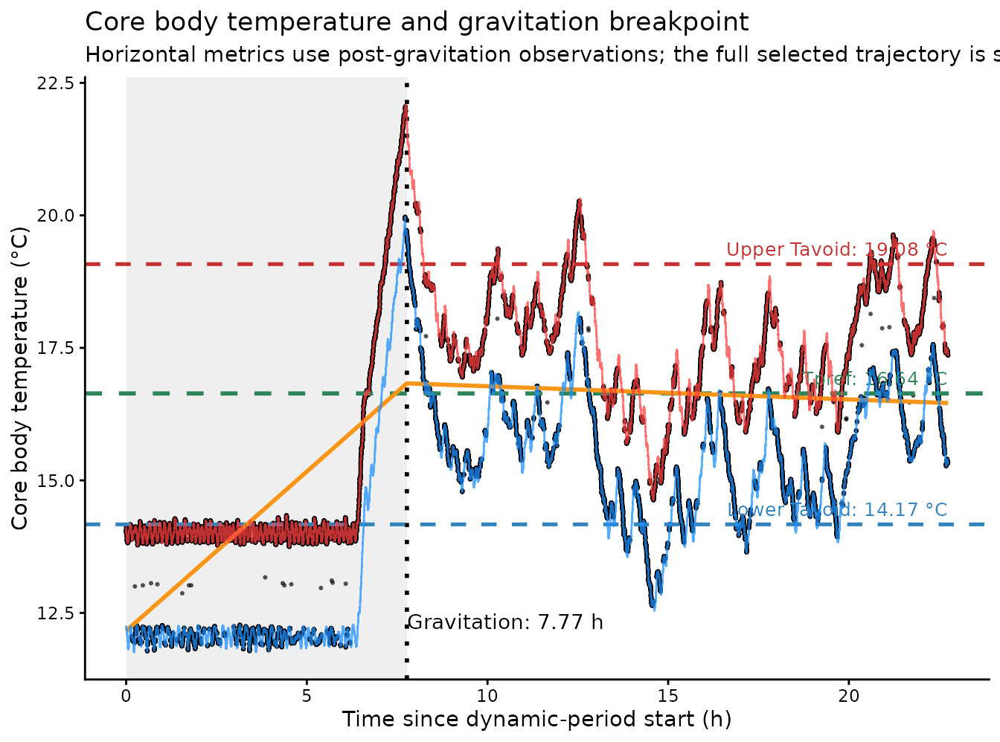
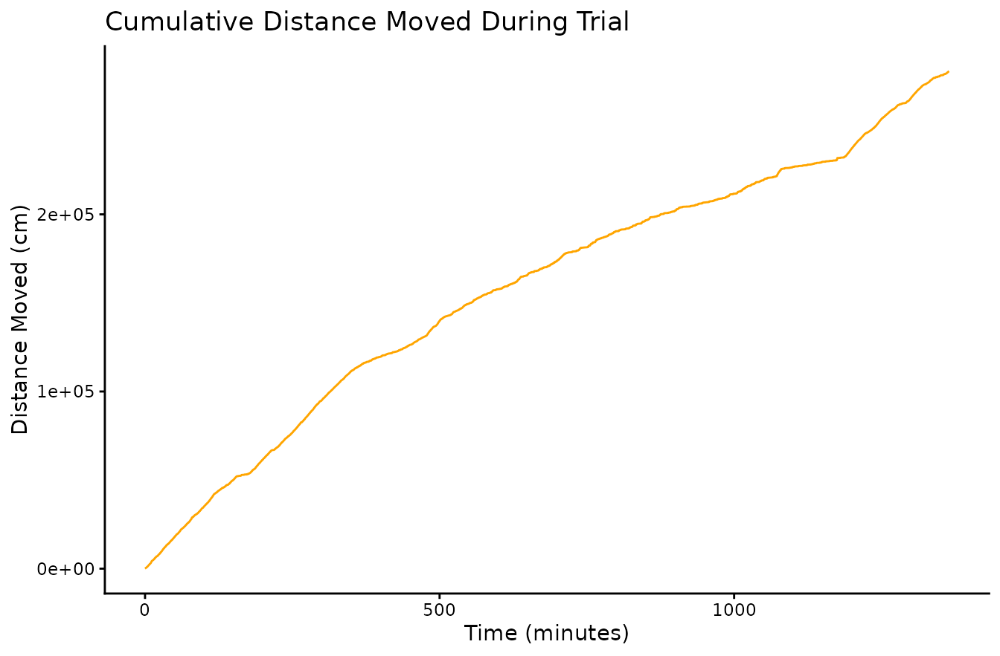
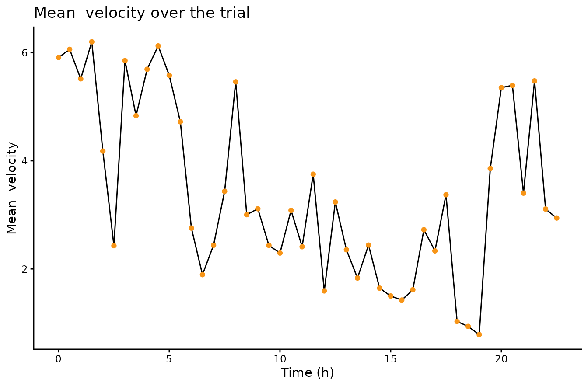
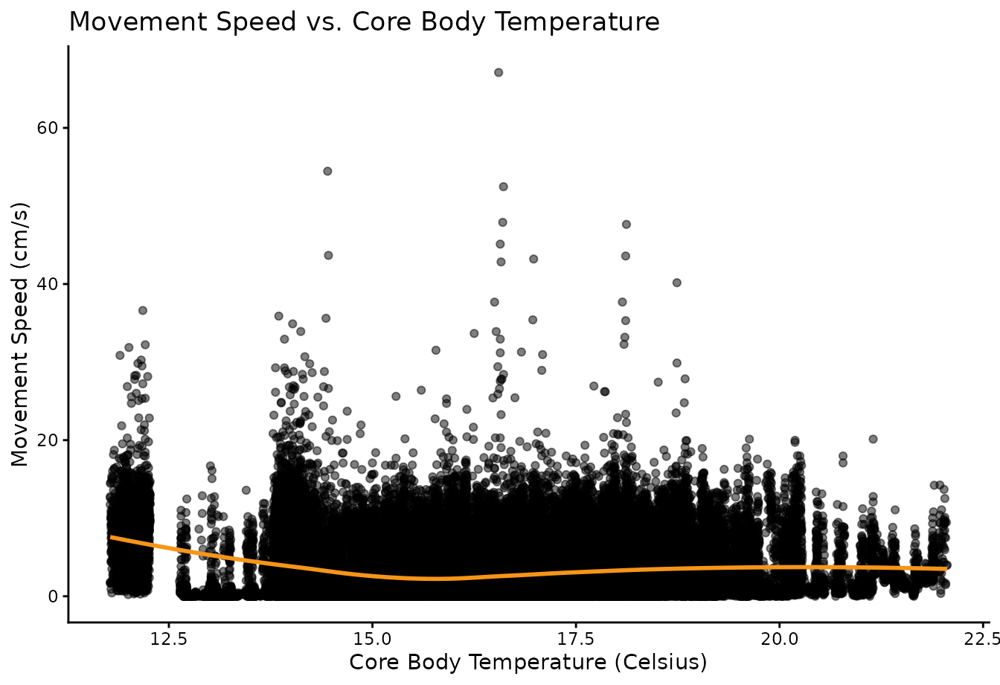

What ShuttleboxR does
The aim of ShuttleboxR is to take the raw shuttle-box recordings to a checked and interpretable project dataset. The workflow has three stages:
- Import and organise the data.
- Calculate shuttle-box metrics consistently.
- Inspect and troubleshoot individual trials and the complete project.
The package works at two linked levels:
- one fish, where the full time series can be inspected; and
- the complete project, where all fish can be compared and unusual trials flagged for closer review.
A project-level flag of an individual trial is not an automatic reason for exclusion. The intended workflow is flag → inspect the raw trial → decide and document.
Installation
ShuttleboxR can be installed directly from GitHub. First install the
remotes package if it is not already available:
install.packages("remotes")Then install ShuttleboxR:
remotes::install_github(
"PBRiesenkamp/ShuttleboxR",
upgrade = "never"
)Load the package before beginning an analysis:
To install the package together with its vignette, use:
remotes::install_github(
"PBRiesenkamp/ShuttleboxR",
upgrade = "never",
build_vignettes = TRUE
)The vignette can then be opened in R using:
vignette("ShuttleboxR", package = "ShuttleboxR")To update an existing installation to the latest version, reinstall
the package with force = TRUE:
remotes::install_github(
"PBRiesenkamp/ShuttleboxR",
force = TRUE,
upgrade = "never"
)Choose your starting point
| Starting data | Function | Result |
|---|---|---|
| One raw ShuttleSoft file | read_shuttlesoft() |
fish: one time-series trial |
| A folder of raw files | read_shuttlesoft_project() |
all_fish: a list of trials |
| An existing one-row-per-fish summary CSV | read_project_database() |
project_data: a project summary table |
One raw file
fish <- read_shuttlesoft(file.choose())A folder of raw files
all_fish <- read_shuttlesoft_project(directory = choose.dir())
project_data <- calc_project_results(all_fish)The Windows folder-selection window displays folders rather than the
.txt and .csv files inside them. Select the
folder containing all raw trials.
An existing project summary
project_data <- read_project_database(file.choose())Do not use read_shuttlesoft() for an existing
one-row-per-fish table. It expects raw time-series observations.
Branch 1: analyse and inspect one fish
Import the recording
fish <- read_shuttlesoft(file.choose())When the recording contains an acclimation period, provide the time at which the dynamic trial started:
fish <- read_shuttlesoft(file.choose(), trial_start = "13:30:00")This vignette uses the example recording included with the package:
example_file <- system.file(
"extdata",
"Fish_70_13_2_rev_B.txt",
package = "ShuttleboxR"
)
fish <- read_shuttlesoft(example_file)
inspect(fish)
#> [1] "No errors were found in the dataset"read_shuttlesoft() prepares the file automatically. It
creates elapsed time, identifies shuttle events and retains the
core_T values already produced by ShuttleSoft.
View gravitation before calculating thermal metrics
The beginning of a dynamic trial may describe the route from the starting temperature to the fish’s settled thermal region. Including this transition period can pull Tpref towards the starting conditions and bias Tbreadth, avoidance percentiles, core-temperature variation, and apparent time near limits.
View the fitted transition first:
plot_T_segmented(fish)
plot_T_segmented() estimates gravitation automatically,
shades the transition and marks the breakpoint. The same duration can be
reported numerically with:
calc_gravitation(fish)
#> [1] 7.769592The user does not need to save this value or pass it to every later
function. When exclude_gravitation = TRUEin the relevant
functions, that function estimates gravitation under the hood and
applies the correct cutoff for each specific trial.
Inspect the segmented plot before relying on the breakpoint. Continued drift, an implausible breakpoint, little data after the breakpoint, temperature-control failure, or prolonged contact with the programmed limits all deserve closer attention.
Calculate settled thermal metrics
calc_Tpref(fish, exclude_gravitation = TRUE)
#> [1] 16.64
calc_Tavoid(fish, exclude_gravitation = TRUE)
#> lower upper
#> 14.17 19.08
calc_Tbreadth(fish, exclude_gravitation = TRUE)
#> [1] 1.787388
calc_Tpercentile_range(fish, exclude_gravitation = TRUE)
#> [1] 2.3825The same simple structure applies to other thermal summaries:
calc_extremes(fish, exclude_gravitation = TRUE)
#> lower upper
#> 0 0
calc_coreT_variance(
fish,
variance_type = "std_deviation",
exclude_gravitation = TRUE
)
#> [1] 1.560446When trial_start was supplied and only the dynamic
period should be analysed, add
exclude_acclimation = TRUE:
calc_Tpref(
fish,
exclude_acclimation = TRUE,
exclude_gravitation = TRUE
)Thermal metrics calculated after gravitation describe settled thermal behaviour rather than the time and route taken to reach it.
Distance, shuttling and chamber occupancy can describe either the complete selected period or only settled thermoregulation:
# Complete selected period
calc_shuttles(fish)
calc_tot_distance(fish)
# Settled thermoregulation only
calc_shuttles(fish, exclude_gravitation = TRUE)
calc_tot_distance(fish, exclude_gravitation = TRUE)The optional gravitation_time argument remains available
for advanced use when a manually checked value must be reused exactly.
It is not part of the normal workflow.
What Tpref and the thermal-spread metrics mean
-
Tprefdescribes the centre of the selected temperature distribution. The default is the mediancore_T. -
Tavoid_lowerandTavoid_upperare the lower and upper percentile boundaries. Their difference isTpref_range. -
Tpercentile_rangeis the difference between two selected percentiles. The defaults are the 25th and 75th percentiles, giving the interquartile range: the width of the central 50% of observations. -
Tbreadthdescribes how far apart the temperatures experienced by the fish were across the complete distribution.
Percentile-based thermal range
The percentile-based range is calculated as:
With the defaults, this is Q75 - Q25. A value of 1.5 °C
means that the middle half of the fish’s core-temperature observations
spans 1.5 °C. It does not mean that the interval is centred on
Tpref.
calc_Tpercentile_range(fish, exclude_gravitation = TRUE)
#> [1] 2.3825The central interval can be widened or narrowed by changing the percentiles:
calc_Tpercentile_range(
fish,
percentiles = c(0.10, 0.90),
exclude_gravitation = TRUE
)This measure is less influenced by the tails than
Tbreadth, because it uses only the two chosen percentile
boundaries. It is also conceptually distinct from
Tpref_range, which is derived from the avoidance
percentiles specified in calc_Tavoid().
Tbreadth explained
Imagine choosing two moments from the analysed part of the trial and
comparing the fish’s core temperature at those moments. Repeat this for
every possible pair and take the average difference. That average is
Tbreadth.
- A fish remaining near one temperature has a Tbreadth close to 0 °C.
- Equal time at 20 °C and 21 °C gives a Tbreadth of 0.5 °C.
- Equal time at 10 °C and 20 °C gives a Tbreadth of 5 °C.
For core-temperature observations :
Tbreadth is not centred on Tpref and does not define a
lower and upper interval. It also cannot show histogram shape by itself.
Two fish can have the same Tbreadth even when one distribution has one
broad peak and the other has two separate peaks.
View the value together with the histogram:
plot_coreT_histogram(fish, exclude_gravitation = TRUE)
The histogram’s bin_size changes only the drawing. It
does not change the Tbreadth calculation.
Inspect whether the trial is interpretable
Inspection should answer two questions:
- Did the system and tracking work as intended?
- Did the fish show behaviour that can reasonably be interpreted as thermoregulation?
Chamber temperatures
plot_T_gradient(fish)
Look for a stable warm-cold difference, plausible heating and cooling rates and no abrupt interruptions or impossible values.
Tracking and spatial behaviour
plot_tracking(fish)
#> t_interval mistrack
#> 1 0 0
#> 2 1 0
#> 3 2 0
#> 4 3 0
#> 5 4 0
#> 6 5 0
#> 7 6 0
#> 8 7 0
#> 9 8 0
#> 10 9 0
#> 11 10 0
#> 12 11 0
#> 13 12 0
#> 14 13 0
#> 15 14 0
#> 16 15 0
#> 17 16 0
#> 18 17 0
#> 19 18 0
#> 20 19 0
#> 21 20 0
#> 22 21 0
#> 23 22 0
plot_heatmap(fish)
Poor tracking can inflate or suppress distance and create false shuttles. A heatmap concentrated in one small area can indicate inactivity, tracking lock on an object, or a fish that did not engage with the thermal gradient.
Numerical summaries of movement and data quality
Several useful trial-level summaries can be obtained directly:
calc_shuttles(fish)
#> [1] 1130
calc_tot_distance(fish)
#> [1] 280852.4
calc_occupancy(fish)
#> DECR INCR
#> 31299 50550
calc_track_accuracy(fish)
#> [1] 1calc_shuttles() counts chamber changes,
calc_tot_distance() reports total movement,
calc_occupancy() compares use of the warm and cold
chambers, and calc_track_accuracy() reports the proportion
of observations with a valid track. Together, these values provide a
quick check before interpreting more complex thermal metrics.
Distance moved through time
plot_distance(fish)
The cumulative-distance curve shows when movement occurred. A steep section indicates rapid accumulation of distance, whereas a plateau indicates little or no movement. Sudden unrealistic jumps can suggest tracking errors.
Activity in time blocks
plot_interval(
fish,
column = "velocity",
interval_minutes = 30
)
plot_interval() divides the trial into user-selected
time blocks and plots the mean of any suitable column. Here it shows
mean velocity in 30-minute blocks, making prolonged changes in activity
easier to see than in the second-by-second record. Other columns can be
selected in the same way.
Movement speed across core temperatures
plot_speed_coreT(fish)
This plot is useful for asking whether activity changes across the temperatures experienced by the fish. It should be treated as an exploratory relationship, particularly when observations are strongly ordered through time.
Additional exploratory views
The generic histogram function can display the distribution of any suitable trial variable, and the movement record can also be animated:
plot_histogram(fish, column = "velocity", binwidth = 0.5)
animate_movements(fish)Single-trial function finder
| Question | Useful function |
|---|---|
| Did the temperature system behave correctly? | plot_T_gradient() |
| Where is the gravitation breakpoint? |
plot_T_segmented(),
calc_gravitation()
|
| What is the centre and shape of temperature use? |
plot_coreT_histogram(), calc_Tpref(),
calc_Tbreadth(), calc_Tpercentile_range()
|
| When did movement occur? |
plot_distance(), plot_interval()
|
| Did activity vary with temperature? | plot_speed_coreT() |
| Was tracking reliable? |
plot_tracking(),
calc_track_accuracy()
|
| Where did the fish spend its time? |
plot_heatmap(), calc_occupancy()
|
| How much did the fish move and shuttle? |
calc_tot_distance(), calc_shuttles()
|
Branch 2: screen the complete project
Create or import project_data
Route A: start from raw trial files
all_fish <- read_shuttlesoft_project(directory = choose.dir())
project_data <- calc_project_results(
all_fish,
exclude_gravitation_thermal = TRUE
)calc_project_results() estimates gravitation once per
fish and reuses it for all thermal metrics, including
Tpercentile_range. Activity metrics retain the complete
selected period unless exclude_gravitation_activity = TRUE
is also specified.
When the raw files have different dynamic-period start times, pass an
optional metadata table to read_shuttlesoft_project(). This
is an additional import option, not a required part of the standard
workflow.
Route B: start from an existing project-summary CSV
project_data <- read_project_database(file.choose())An existing summary file can only provide metrics already stored in
it. For example, neither Tbreadth nor
Tpercentile_range can be reconstructed from Tpref and
avoidance temperatures. They must already be present in the summary
table or be recalculated from the raw trials.
The package includes an example project database:
project_file <- system.file(
"extdata",
"project_database_example.csv",
package = "ShuttleboxR"
)
project_data <- read_project_database(project_file)Begin with single-variable distributions
plot_histograms(project_data)
These histograms identify fish that are unusual for individual metrics. A univariate flag does not reveal whether the value is technically invalid or biologically meaningful.
Inspect upper and lower limit exposure separately
plot_upper_vs_lower_extremes(project_data)
The default dashed lines mark 10% of analysed observations near each limit. This absolute threshold remains interpretable when most fish have zero exposure. The threshold can be changed directly:
plot_upper_vs_lower_extremes(
project_data,
lower_limit_threshold = 5,
upper_limit_threshold = 5
)A fish above an upper, lower or both limit thresholds should be
returned to plot_T_gradient(),
plot_T_segmented() and
plot_coreT_histogram().
Use bivariate plots to identify different warning patterns
Distance versus shuttling
plot_distance_vs_shuttles(project_data, highlight_cases = TRUE)
Each point represents one fish. This plot is a quick way to find individuals whose total movement and number of chamber changes form an unusual combination.
Useful patterns include:
- low movement + low shuttling: inspect inactivity and tracking;
- low movement + high shuttling: inspect doorway crossings and false shuttles;
- high movement + low shuttling: active movement within one chamber; and
- high movement + high shuttling: active thermoregulation or possible agitation.
Limit exposure versus activity
plot_limits_vs_distance(project_data, highlight_cases = TRUE)
plot_limits_vs_shuttles(project_data, highlight_cases = TRUE)
Exposure above the threshold with little activity suggests that the fish may have remained near a limit without responding. High exposure with high activity may indicate active searching within an unsuitable programmed range.
The plot is all most users need. To obtain the table of highlighted
fish, add return_cases = TRUE:
review <- plot_distance_vs_shuttles(
project_data,
highlight_cases = TRUE,
return_cases = TRUE
)
review$casesView all pairwise relationships
correlation_matrix(
project_data,
columns = c(
"Tpref", "Tpref_range", "grav_time",
"tot_distance", "nr_shuttles", "t_near_limits"
)
)
Variable names appear on the diagonal. The lower panels show pairwise scatterplots and smooth trends; the upper panels show Pearson correlations. A point separated from the main cloud in one panel may represent an unusual combination of otherwise plausible measurements.
The matrix is also useful for identifying strongly correlated variables before PCA.
When available, Tpercentile_range can be added to the
selected columns. Check its correlation with Tpref_range
and Tbreadth before including several thermal-spread
metrics in the same PCA.
Use PCA to screen multivariate behaviour
PCA results depend on the variables included. Supply them explicitly so that a new numeric column cannot silently change the analysis.
project_pca <- pca(
project_data,
variables = c(
"Tpref", "Tpref_range", "grav_time",
"tot_distance", "nr_shuttles",
"t_near_max", "t_near_min"
),
print_labels = FALSE
)
project_pca$plots$screeplot
The scree plot shows how much project variation is represented by each principal component. PC1-PC2 is only a two-dimensional view; later components can contain additional unusual structure.
project_pca$plots$biplot
Read the biplot as follows:
- points close together have similar combinations of metrics;
- an arrow points towards increasing values of that metric;
- longer arrows are better represented in the visible PC1-PC2 plane;
- arrows in similar directions indicate positive association; and
- a fish far in an arrow’s direction is likely to have a relatively high value for that metric.
The default screen is quite conservative. A fish is highlighted only when detected by both Mahalanobis distance and DBSCAN. The detailed output is available directly:
project_pca$outlier_details
#> fileID methods flagged mahalanobis_distance
#> 1 Fish_8_13_2 Mahalanobis + DBSCAN TRUE 23.408263
#> 2 Fish_28_13_3_rev Mahalanobis FALSE 23.427783
#> 3 Fish_48_13_2_S Mahalanobis + DBSCAN TRUE 30.773541
#> 4 Fish_49_13_3_B Mahalanobis FALSE 15.223855
#> 5 Fish_52_20_2_S Mahalanobis + DBSCAN TRUE 15.145753
#> 6 Fish_55_13_2_rev_S Mahalanobis + DBSCAN TRUE 16.719296
#> 7 Fish_57_20_2_rev_S Mahalanobis + DBSCAN TRUE 21.165685
#> 8 Fish_59_13_2_rev_S Mahalanobis + DBSCAN TRUE 20.633282
#> 9 Fish_63_20_2_rev_S DBSCAN FALSE 9.330059
#> potential_drivers
#> 1 t_near_max high (4.2 SD); grav_time low (-3 SD); tot_distance high (2.4 SD)
#> 2 nr_shuttles high (4.9 SD); tot_distance high (1.4 SD); Tpref_range low (-1.1 SD)
#> 3 t_near_min high (5.2 SD); grav_time high (3.7 SD); Tpref low (-3.2 SD)
#> 4 grav_time high (3.7 SD); Tpref_range low (-0.7 SD); tot_distance low (-0.4 SD)
#> 5 t_near_min high (3.1 SD); Tpref_range high (3 SD); t_near_max high (2.1 SD)
#> 6 t_near_min high (4.2 SD); Tpref_range high (2.7 SD); Tpref low (-2.4 SD)
#> 7 t_near_max high (4.7 SD); Tpref high (2.2 SD); grav_time low (-1.2 SD)
#> 8 t_near_max high (4.3 SD); Tpref high (2.2 SD); Tpref_range high (1.9 SD)
#> 9 t_near_max high (2.6 SD); Tpref_range high (2.3 SD); tot_distance low (-1.5 SD)Sensitivity can be changed with mahalanobis_th,
dbscan_th, dbscan_minPts and
flag_rule. For example, flag_rule = "either"
is less conservative than the default "both". These
settings change which fish are highlighted; they do not prove that any
fish is invalid.
Return flagged fish to the raw trial
fish_to_check <- all_fish[["Fish_17.txt"]]
plot_T_gradient(fish_to_check)
plot_tracking(fish_to_check)
plot_T_segmented(fish_to_check)
plot_coreT_histogram(fish_to_check, exclude_gravitation = TRUE)
plot_heatmap(fish_to_check)
plot_distance(fish_to_check)
calc_Tpref(fish_to_check, exclude_gravitation = TRUE)
calc_Tavoid(fish_to_check, exclude_gravitation = TRUE)
calc_Tbreadth(fish_to_check, exclude_gravitation = TRUE)
calc_Tpercentile_range(fish_to_check, exclude_gravitation = TRUE)
calc_extremes(fish_to_check, exclude_gravitation = TRUE)No manual gravitation object is required. Each post-gravitation function uses the same simplified argument and performs the necessary calculation internally.
A suggested decision process is:
- Flag an unusual metric or combination of metrics.
- Inspect the original temperature, tracking and movement records.
- Identify a reason, such as a power interruption, tracking failure, prolonged immobility, unsuitable limits or behaviour inconsistent with the intended assay.
- Compare the pattern with the rest of the project and the ecology of the species.
- Document whether the fish is retained, excluded or included in a sensitivity analysis.
A fish should not be excluded merely because it is statistically unusual. Unusual values can be interesting biological variation!
Getting help
?calc_Tbreadth
?calc_Tpercentile_range
?plot_distance_vs_shuttles
?pca
help(package = "ShuttleboxR")